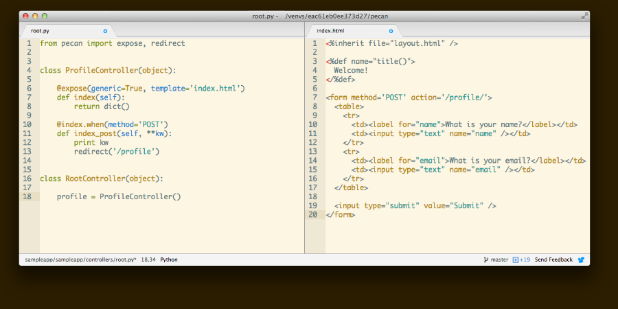

Welcome to Pecan, a lean Python web framework inspired by CherryPy, TurboGears, and Pylons. Pecan was originally created by the developers of ShootQ while working at Pictage.

Pecan was created to fill a void in the Python web-framework world – a very lightweight framework that provides object-dispatch style routing. Pecan does not aim to be a "full stack" framework, and therefore includes no out of the box support for things like sessions or databases. Pecan instead focuses on HTTP itself.
Although it is lightweight, Pecan does offer an extensive feature set for building HTTP-based applications, including:
- Object-dispatch for easy routing
- Full support for REST-style controllers
- Extensible security framework
- Extensible template language support
- Extensible JSON support
- Easy Python-based configuration
While Pecan doesn't provide support for sessions or databases out of the box, tutorials are included for integrating these yourself in just a few lines of code.